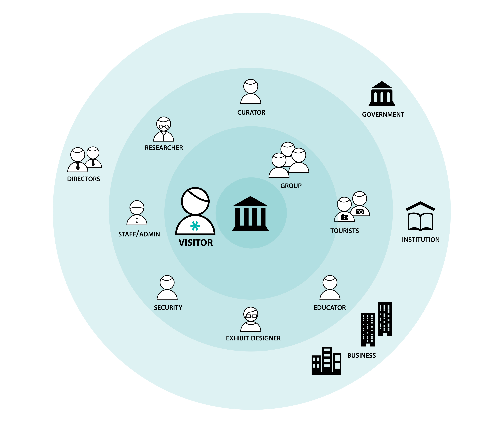
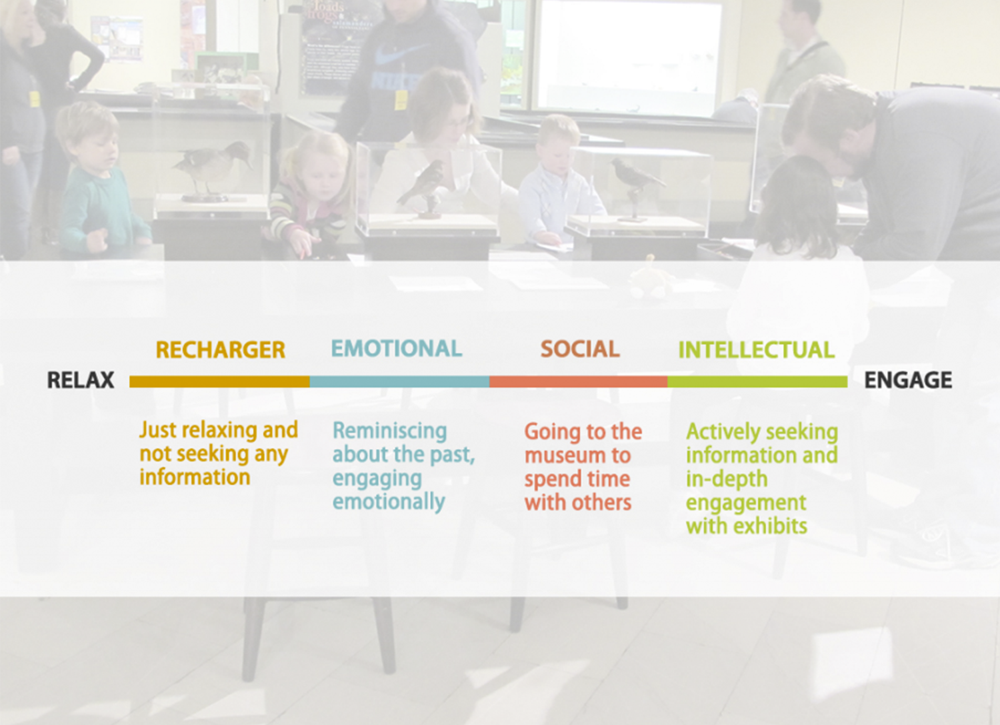
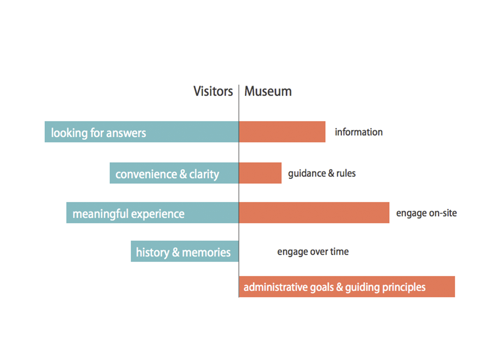
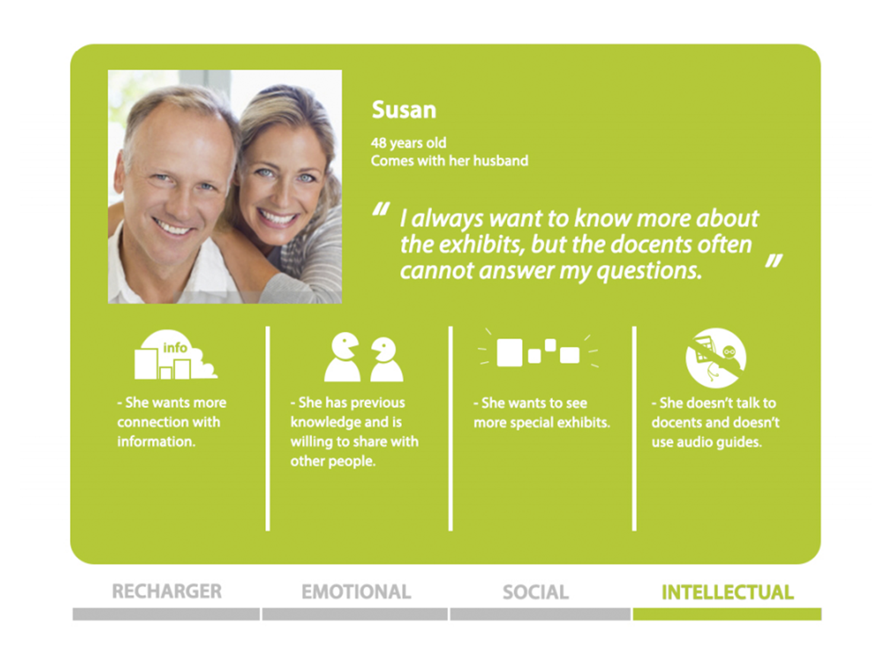
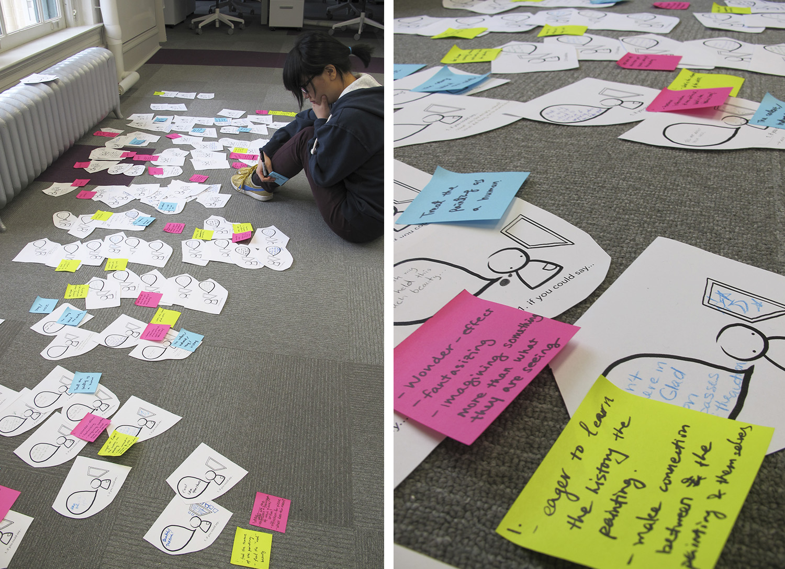
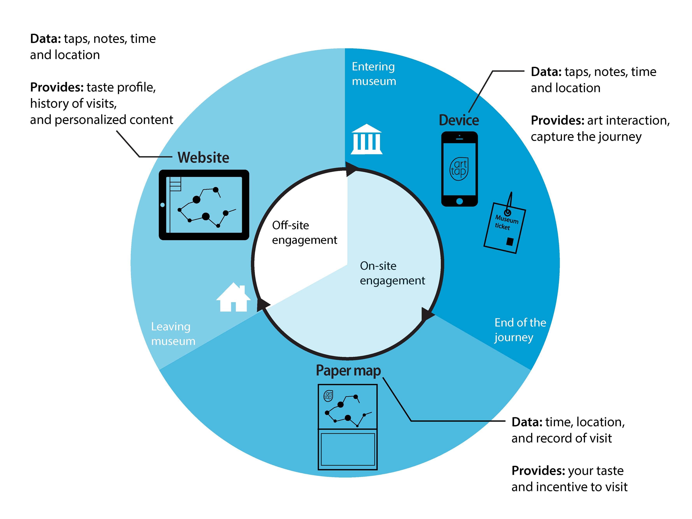
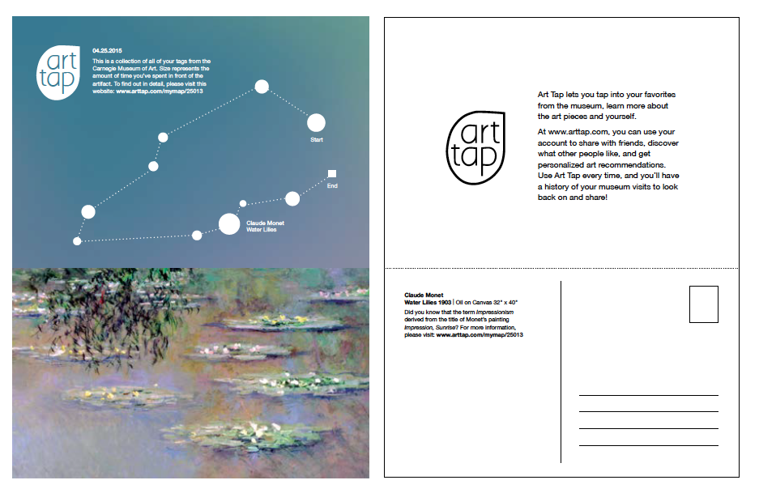

Art Tap
Carnegie Mellon University /
Microsoft
Jung Yung Paek, Joy Chen,
Shahrzad Samadzadeh
Jan - May 2013
The goal of this project was to use data to improve people's experience of visiting a museum. I practiced the whole design process from research, ideation, prototyping to final concept. And I participated in the creation of the final interfaces for Art Tap app and website, and the systematic map.
Final Results
A museum-based service system that creates an information-rich experience map of the visitor’s journey, using interactivity and data to create positive impact for stakeholders. Visitors can store and build their museum experiences through out the time, and share it with family and friends.
Process
1. Exploratory Research and Findings
In the beginning of the research, we broadly collected information from different types of museums and literatures. Then we selected Carnegie Museum of Art as our target client. After we chose our focus, we started to go to the field to interview visitors, museum directors and managers.
In the beginning of the research, we broadly collected information from different types of museums and literatures. Then we selected Carnegie Museum of Art as our target client. After we chose our focus, we started to go to the field to interview visitors, museum directors and managers.
-

- 
- 
- 
- 
2. Generative Research and Concepts
After getting the understanding of visitors' needs, we designed several co-design activities in the participatory research stage.
a. Generative Probe
The goals for the probe were
- to understand the data that the visitors want to know
- to explore the interactivity between the visitors and the artifacts
- to explore the possible connections among visitors
We hold two days of activities in Carnegie Museum of Arts, includes 46 participants. After the workshops in the museum, we clustered 95 ideas into 4 key ideas, which were:
- Make your own art piece
- Tag the artifacts and create a space for sharing.
- Multimodal experiences, e.g. connecting artifacts with sound.
- Experience artifacts in a new way, such as augmented reality.
- 
-

-

b. Scenarios and Magic Device
We further developed the 5 key ideas into scenarios, then invited 14 intellectual museum visitors to walk them through the scenarios for concept evaluation. Besides, we asked our participants what was the ideal device that they wanted to have while they were in the museum, and gave they the toolkit to create their own "Magic Device".
In the end, we chose personal collection map as our final concept according to the feedback we got.
3. Prototyping and User Validation
Paper Prototype
The goal is to get feedback on the usefulness and clarity of the whole service.
Digital Prototype
With the working mid-fi digital prototype, we were able to gain more specific feedback and test the usability of the interfaces in the system.
Solution Overview
Art Tap system map 
Website
Art Tap Interactive App
Personal Museum Journey Map
